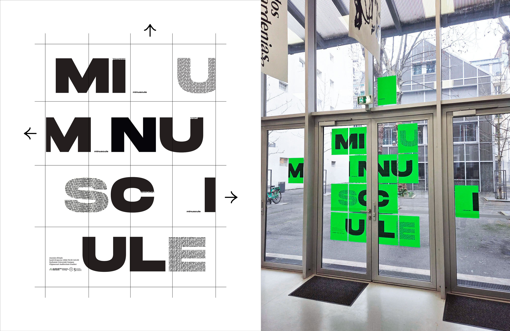

Minuscule - JDE
Affiche
Technique : Impression sur papier fluo
Nombre : 16 feuilles
Format : 29,7 × 42 cm
Conception d’affiches pour la Journée d’études de Lettres Sorbonne Université sur le thème du « minuscule ». Le projet joue sur le contraste d’échelle en assemblant seize feuilles A3 pour créer un support monumental, confrontant le spectateur à sa propre petitesse.
